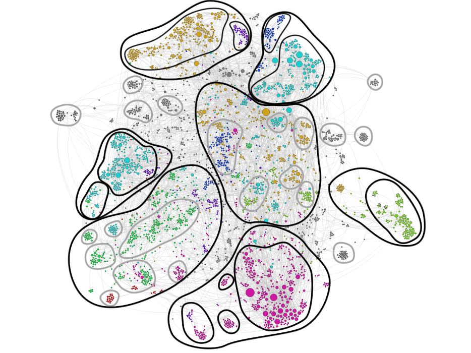
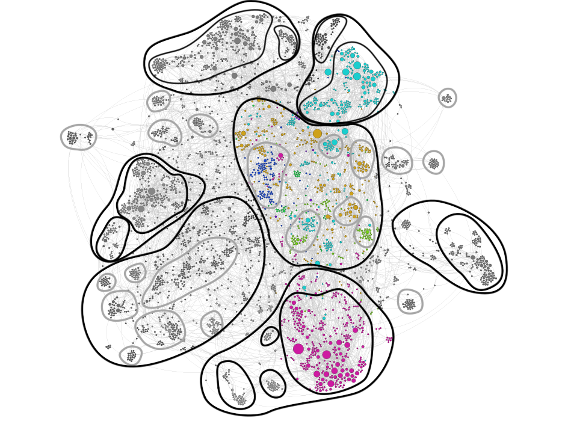

Introduction
This protocol aims to discover links between Wikipedia pages inherent our topic, in order to find out connections, clustering and alignments of themes around a specific area of knowledge.
This protocol aims to discover links between Wikipedia pages inherent our topic, in order to find out connections, clustering and alignments of themes around a specific area of knowledge.
The nodes represent Wikipedia pages. A link from node A to node B means that in the page A there is a See also linked to page B. The dimension of node is related to number of link to that node. The more nodes are close, the more they are related to each other.
After having scraped the area of Wikipedia that interested us, we cleared the data set from the imperfect pages naming that often made nodes double. After that, nodes with a single connection were eliminated from the vizualization in Gephi. In the end we generated the graph of the network, spatializing with Force Atlas 2 and colouring the main clusters.
There some main macro-cluster, visible as variations of nodes density. A) A top-left one about digital rights, copyright, copyleft and file sharing. B) Moving to the top-right side we found a densification about Bitcoin, Tor network, anonymity in many of its forms (virtual or not) and other ways to avoid being "spied" (cryptograpgy, anonymity softwares and so on). C) In the middle of the graph there is a wide addensation that plays mostly the role of bridge, expecially linked to the top part. It deals with censorship, in particular on internet (the biggest bridge node), freedom of expression, Hactivism and internet activism, data privacy and content control, Anonymous group and Wikileaks close to phenomena that the web brought back to attection like privacy, identity theft and ideology like Libertarian socialism and freedom of information. D) After a gap, moving to the bottom, there is a macro-cluster opposite to the top one also for its topics: traffic analysis, cyber spying, mass surveillance (the biggest bridge of the entire network), most of the tools adopted to act it and some of the main cases like ECHELON and COINTELPRO. E) On the right we can see a related but less interesting addensation about drugs and the war on them. F) On the bottom-left there is a macro-cluster about data mining, social media, metadata and other ways of web and society analysis. G) At last, after a little gap, we find the "counterpart" of the macro-cluster G: computer and information security, access control, authentication and identity management.
A.1) Copyright and digital rights, with other micro-clusters divided by sub-topic (software, arts...), not very interesting for our research. The main bridge node is "Anti Counterfeiting Trade Agreement", in the middle of the cluster. A.2) Virtual private networks, open VPN and so on. B.1) Bitcoin and other ways of payment not easily traceable. B.2) The most important cluster of this area, including "Tor (anonymity network)", anonymous P2P, I2P (the main central bridges), anonimity, privacy software, Pretty Good Privacy (the main bridges to the central part of the network) and Crypto-anarchism and Agorism (the main bridges to the left part). All this areas is linked to each other and to the other in the central part mostly by the bridge node "Freedom of information". The middle of the network is made by a lot of micro-clusters about ideologies, very relevant but not so interestint becuase they are generic. However it is interesting to note that the nodes are the main bridge nodes are, from the top to the bottom, or rather more related to pro-anonymity or to against-anonymity: internet censorship, internet privacy, data privacy, Hacktivism, content control softwares, Anonymous group, censorship, whistleblowering, indentity theft and privacy. This last node together with "Traffic analysis" lead to the against-anonymity clusters. D.1) The particular case COINTELPRO with its related nodes, not particularly close to our research. D.2) A cluster about spying, cyber spying, industrial espionage and so on. D.3) The most important cluster of this area, about surveillance and mass surveillance, also divided in the most active country in the world and their control agencies and laws. Then there are many other small micro-clusters in this area, not very interesting, except for the central bridge and linked nodes of telecomunication data retention. The bottom-left macro-cluster is not very interesting for our research, although it is parted in several micro-clusters. The central-left, instead, is more juicy. G.1) A smaller cluster about data governance, closely related to the macro-cluster F. G.2) The main cluster about computer and information security and identity management (that are also the main bridge nodes of the area) with the related laws. In the network there are also several micro- cluster and quite isoleted nodes, much less interesting. The most interesting areas, at last, are the cluster B.2 supporting Tor network and the cluster D.3 against the excess of freedom and anonymity that this technology brings. In the middle we can find the motivation that the actors of the controversy can take to prove their own points.
